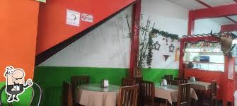

El Fogón de la Abuela
Descripción: Su comida ofrece sabores caseros típicos como sancochos y chuletas vallunas en porciones generosas y llenas de tradición. El ambiente es sencillo, familiar y acogedor, perfecto para un almuerzo relajado en el pueblo.
Dirección: Calle 10 # 5-28, Barrio Centro, Calima El Darién, Valle del Cauca.
Horario: Lunes a Domingo: 8:00 a.m. a 6:00 p.m